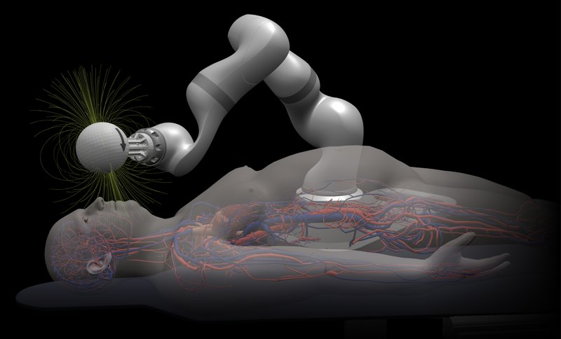

Commercial and clinical-stage systems · magnendo_magnendo2026
Magnendo
Magnendo magnetic guidewire robot

1 / 2

- Family
- Commercial and clinical-stage systems (magnetic-navigation)
- Devices
- magnetically steerable guidewires with robotic control
- Degrees of freedom
- N.R.
- Push
- Magnetic
- Twist
- Field direction
- Tested up to
- Phantom
- Sim-to-real
- None found — No simulation-trained controller found for this robot.
Testing
- Highest level
- Phantom
- What was tested
- preparing first-in-human studies (santelog summary of press release)
- Key numbers
- US$18M Series A
Mechanism
- Push (translation)
- magnetic
- Twist (rotation)
- magnetic
- Device range
- N.R.
- Target anatomy
- neurovascular access (stroke)
Sensing and interface
- Force sensing
- N.R.
- Leader and haptics
- N.R.
- Imaging
- N.R.
- Sterility
- N.R.
Size
- Footprint (mm)
- N.R.
- Mass (kg)
- N.R.
Simulation
- Simulation model
- none found
- Sim-trained controller
- none found
Versions
- Lineage
- N.R.
Sources
- none listed
Notes
- Notes
- Likely the commercial form of the MIT telerobotic magnetic guidewire (S8 row); academic precursor is A5 scope.
This record
- Read level
- web — web (search snippet only)
- Picture
- https://cdn.prod.website-files.com/66671603a2d58c965e1693ff/6a5fd7d38e72bc4f2bf32059_Magnendo_Representative%20Image_1.png (13334x9000; home page https://www.magnendo.com/) ↗ — licence: press image (Magnendo); grade B
- Picture changes
- cropped (1100,1000)-(13334,8400), downscaled 3.4x to 3600 px wide (LANCZOS)
- Found by
- commercial: Search of commercial and clinical-stage systems.
- Data
- JSON · YAML:
records/robots/magnendo_magnendo2026.yaml - Correction
- Suggest a correction [repository not created yet]